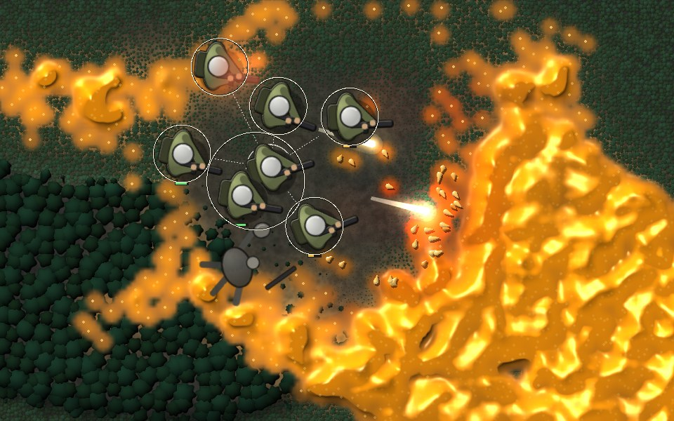
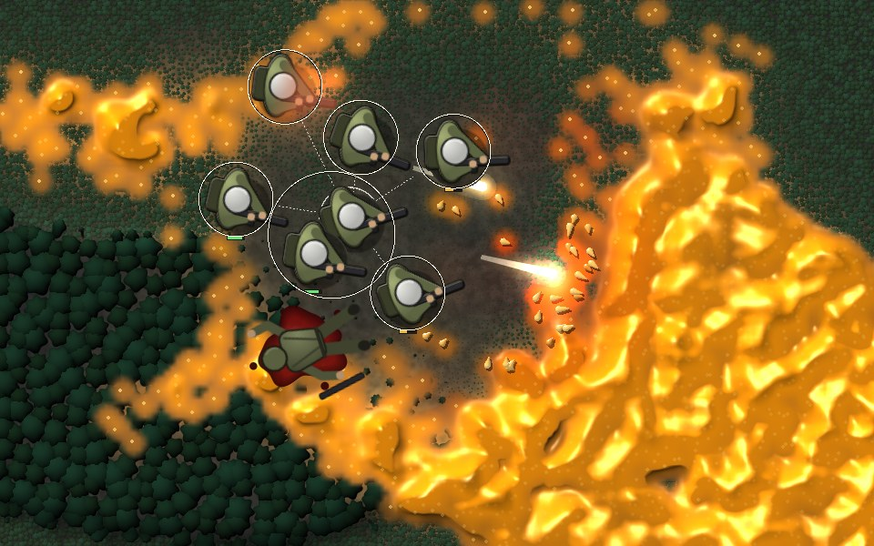
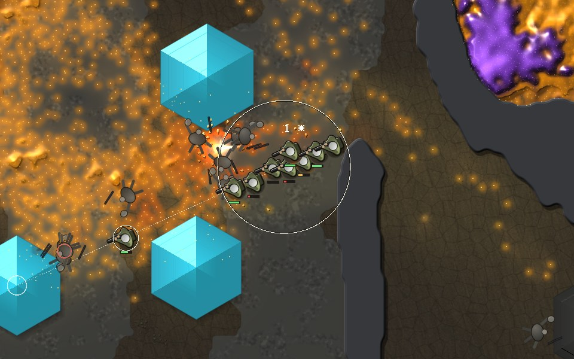
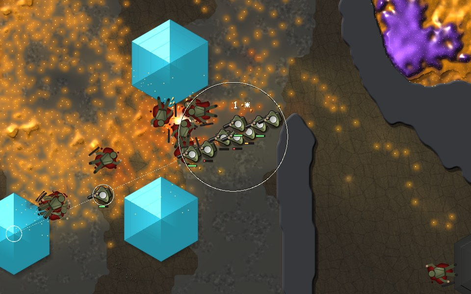

<title>Fallen Soldiers</title>
<meta name="claude:viewport-fit-sides" content="cover">
<link rel="stylesheet" href="https://fonts.googleapis.com/css2?family=Bricolage+Grotesque:opsz,wght@12..96,600;12..96,750&family=Source+Sans+3:wght@400;600&family=JetBrains+Mono:wght@400&display=swap">
<style>
/* Layout: one reading column; the before and after stills as a pair, then each film as a pair of zooms (stacked on a phone), counts under each */
:root{
  --bg:#f3f2ec; --panel:#e8e6dc; --fg:#1d211c; --muted:#5b6157;
  --accent:#b0702a; --soft:#f1e3cf; --line:#cfccbf;
  --display:"Bricolage Grotesque", "Segoe UI", system-ui, sans-serif;
  --body:"Source Sans 3", "Segoe UI", system-ui, sans-serif;
  --mono:"JetBrains Mono", ui-monospace, Consolas, monospace;
}
@media (prefers-color-scheme: dark){:root:not([data-theme="light"]){
  --bg:#16140f; --panel:#221f18; --fg:#ebe7dd; --muted:#a39d8e;
  --accent:#e0a35a; --soft:#33291b; --line:#3a3428; color-scheme:dark}}
:root[data-theme="dark"]{
  --bg:#16140f; --panel:#221f18; --fg:#ebe7dd; --muted:#a39d8e;
  --accent:#e0a35a; --soft:#33291b; --line:#3a3428; color-scheme:dark}
body{background:var(--bg);color:var(--fg);font:17px/1.55 var(--body);margin:0;
  padding-left:max(16px,env(safe-area-inset-left,0px));padding-right:max(16px,env(safe-area-inset-right,0px));padding-block:28px 64px}
main{max-width:1180px;margin:0 auto;display:flex;flex-direction:column;gap:30px}
h1,h2,h3{font-family:var(--display);text-wrap:balance;line-height:1.15;margin:0}
h1{font-size:2.3rem;font-weight:750}
h2{font-size:1.45rem;font-weight:750;border-top:2px solid var(--accent);padding-top:14px}
h3{font-size:1.08rem;font-weight:600}
p{margin:0}
section{display:flex;flex-direction:column;gap:14px}
.lede{color:var(--muted);font-size:1.02rem;max-width:760px}
.eyebrow{font:12px/1 var(--mono);letter-spacing:.08em;text-transform:uppercase;color:var(--accent)}
.prose{max-width:760px}
code{font:0.86em var(--mono);background:var(--panel);padding:1px 4px;border-radius:3px}
.grid{display:grid;grid-template-columns:repeat(2,minmax(0,1fr));gap:16px}
@media (max-width:720px){.grid{grid-template-columns:minmax(0,1fr)}}
figure{margin:0;display:flex;flex-direction:column;gap:6px;min-width:0}
figure video,figure img{width:100%;height:auto;display:block;border-radius:6px;border:1px solid var(--line);background:#000}
figure img.px{image-rendering:pixelated}
figcaption{display:flex;align-items:baseline;gap:10px;flex-wrap:wrap;font-size:.92rem;color:var(--muted)}
.side{font:750 1.1rem/1 var(--display);color:var(--fg);min-width:4.6em}
.counts{font:13px/1.4 var(--mono);color:var(--fg);font-variant-numeric:tabular-nums}
.note{background:var(--soft);border-radius:8px;padding:16px 18px;max-width:760px;display:flex;flex-direction:column;gap:8px}
ul{margin:0;padding-left:1.2em;display:flex;flex-direction:column;gap:8px;max-width:760px}
footer{font-size:.85rem;color:var(--muted);max-width:760px}
</style>
<main>
<header style="display:flex;flex-direction:column;gap:10px">
  <span class="eyebrow">Larder World · Look A · 2026-11-18</span>
  <h1>A fallen soldier lies in its blood</h1>
  <p class="lede">Your note: "When soliders die, the body on the floor looks really bad. You could create a better looking body or just a blood splotch." This does both. A soldier who falls now lies full length on its back in our olive, arms flung out and rifle dropped, over a pool of blood that spreads in the seconds after the fall. Before, it was a grey shape with stick limbs that read as a spider.</p>
</header>

<section>
  <h2>Before and after</h2>
  <p class="prose">The same game drawn by main and by this change. The Fork held with plain rounds at 28 s, zoom 12, and planet 2's first crystal at 1:30, zoom 6.</p>
  <div class="grid">
    <figure><figcaption><span class="side">Before</span><span class="counts">Fork, 28 s, 7 standing, 1 fallen</span></figcaption></figure>
    <figure><figcaption><span class="side">After</span><span class="counts">the same moment</span></figcaption></figure>
    <figure><figcaption><span class="side">Before</span><span class="counts">planet 2, 1:30, 9 standing, 10 lost</span></figcaption></figure>
    <figure><figcaption><span class="side">After</span><span class="counts">the same moment</span></figcaption></figure>
  </div>
</section>

<section>
  <h2>A soldier falls, the Fork</h2>
  <p class="prose">25 to 28 s, not squad mode: one of eight falls below the squad, and its pool spreads under it.</p>
  <div class="grid">
    <figure><video src="fork-z12.mp4" poster="fork-z12.jpg" autoplay muted loop playsinline aria-label="Zoom 12: a soldier falls and a pool of blood spreads under it"></video><figcaption><span class="side">Zoom 12</span><span class="counts">8 standing at 25 s, 7 from 26 s</span></figcaption></figure>
    <figure><video src="fork-z6.mp4" poster="fork-z6.jpg" autoplay muted loop playsinline aria-label="Zoom 6: the same fall"></video><figcaption><span class="side">Zoom 6</span><span class="counts">the same</span></figcaption></figure>
  </div>
</section>

<section>
  <h2>The fight at a crystal, planet 2</h2>
  <p class="prose">Run seed 1 with the greedy hand, 86 to 92 s, where the squad loses soldiers at its first crystal.</p>
  <div class="grid">
    <figure><video src="p2-z6.mp4" poster="p2-z6.jpg" autoplay muted loop playsinline aria-label="Zoom 6: the squad fights at a crystal with its fallen round it"></video><figcaption><span class="side">Zoom 6</span><span class="counts">11 standing at 86 s, 8 at 92 s</span></figcaption></figure>
    <figure><video src="p2-z12.mp4" poster="p2-z12.jpg" autoplay muted loop playsinline aria-label="Zoom 12: the same fight"></video><figcaption><span class="side">Zoom 12</span><span class="counts">the same</span></figcaption></figure>
  </div>
</section>

<section>
  <h2>What to look for</h2>
  <ul>
    <li><strong>A body you can read as a person at zoom 6:</strong> head and helmet, a chest, two legs ending in boots, one arm flung past the head.</li>
    <li><strong>It fell back from the slime it was facing,</strong> so the head lies away from the fight and the boots toward it.</li>
    <li><strong>The pool spreads for about two seconds and then holds,</strong> dark at its rim, red inside, with a few drops flung past its edge. Every pool's shape is its own.</li>
  </ul>
  <div class="note">
    <h3>Also seen</h3>
    <p>Where many soldiers fall in one place their bodies pile up, as at planet 2's crystal edge. That is where they died, and the game keeps every body for the planet. If the pools read too loud in play, the colour and size are two numbers to turn down.</p>
  </div>
</section>

<footer>Filmed on the software renderer, 30 frames a game second. Source and numbers: <code>Reports/fallen-soldier-2026-11-18/</code> in the repo.</footer>
</main>
